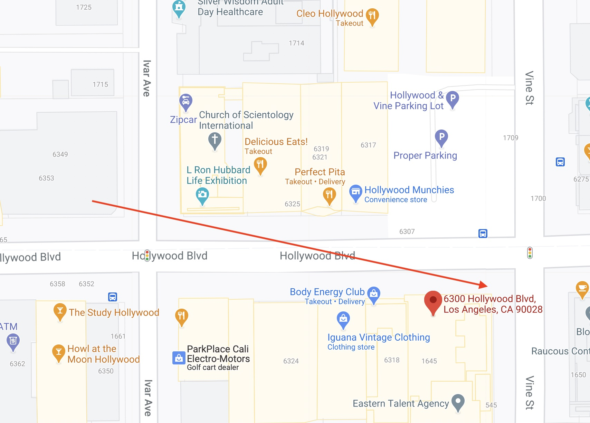

In my photographic practice I tend to be much more interested in why a photograph is impactful due to its content or what makes the photograph more beautiful than the scene that was photographed. As a researcher, this changes and I am often using OSINT sources to derive details about a photograph. I try to determine locations based on the sun and shadows, distant ridge lines, the positioning of satellite dishes, and anything else that can give me a clue. With this article I chose to turn that on its head and take the analytical approach fo research to some of my favorite photographs.
OSINT or Open Source Intelligence is the process of using open data sets such as public records, historical archives, and maps in the intelligence gathering process.
garry winogrand
Garry Winogrand is widely regarded as one of the most influential photographers of the 1960s. While much of his work was centered on New York City, where he grew up, he also spent later years of his life in Texas and California including a pivotal road trip in 1964 from which some of his best work emerged. Winogrand sits firmly in the cadre of photographers that I respect so heavily that I could only ever hope to imitate them at best. Perhaps by taking a deeper look at where and when he was making some of his iconic photographs can provide me with at least a slight glimpse into the life of one of the greats of American photography.
los angeles, 1969
This photograph is one of Winogrand’s most beautiful with the light, triangle of subjects, and overall mood conveying the tail end of the 1960s. But as I mentioned above, I am not here to discuss what makes this photograph good, but to derive what knowledge I can glean from its contents.
location
In this instance I have a fairly easy way to discover this photograph’s location. From the name of the photograph itself I know this is in Los Angeles and by the 1600 block sign in the upper right I know that Winogrand is at Vine and Hollywood Boulevard. I can further confirm this by looking down on the ground and finding Louella Parsons’ star which is at the 6300 block of Hollywood Boulevard. There could be some confusion here as Louella Parsons had two stars, one for radio and one for film, but her film star has her middle initial “O” in it and resides at the 6400 block of Hollywood Boulevard.
To further confirm this location I can check Google Street View and see that the fire escape, building columns, and the large building in the background to the right are all still present. That background building is now the headquarters for the Church of Scientology and resides on that corner. I’ll circle back around to that a little bit later.
time
Winogrand, like many photographers, chose to only label his photographs by year. However, several details I’ve already determined plus a few new ones can help me determine a near-exact day for when this photograph was made. I already know that Winogrand was at the 6300 block of Hollywood Boulevard and Vine in 1969. I know that he was facing west and that the time was approaching sunset because of how low the light is in the sky. If I take a closer look I can see that the shadows of objects are longer than the objects themselves which is an important feature. Sometimes by calculating the trajectory of the sun and the length of objects I can get an exact location and time, but in this instance I cannot see the end of any of our shadows. The final important detail is that the sun is not procluded by the large building behind. This, plus the shadows themselves, lets me draw the conclusion that our sun must be on a trajectory that doesn’t block that street as it does in our Google Street View image. This should help me narrow down to at least a block of days when this was shot.

To do this work I’ll use SunCalc and some manual futzing around. There are a number of tools that let you do this – many that are specifically for mapping out potential photo shoots for photographers. SunCalc has historical data on the trajectory of the sun that I can use to brute force my way to a date range. Since everyone is in light clothing I can assume Winogrand was shooting closer to a summer month and since he was facing west and his subjects have shadows longer than the subjects themselves I know Winogrand was at a very late stage in the day. This, however, isn’t enough to get us narrowed down but to a few months. I need near exact heights of objects.
Looking around the image I can see the street sign there. In the Los Angeles County code information signs are required to be 6’6” at a minimum. However, I can’t find when that code came into effect and if there were any requirements for signage back in 1969 so that’s an unreliable number. I’m not a car buff so can’t reliably tell which models those are and calculate the rest of the heights based off of their build specifications. Perhaps if I wanted to be more precise I could reach out to a friend who is a car buff to further narrow down. Since the women in the photograph all look about the same height I can venture to guess that they are of average height. Women around their age in 1969 would have had an average height of 163cm according to historical data. This is enough for me to then map to a number that I know for sure: all Hollywood stars are spaced 6ft apart or 1.8m.
So knowing all of this I can now look at the woman on the right, whose shadow I can see the most of, and note that her legs are casting a shadow of about two Hollywood stars meaning her full shadow should be between 4m to 6m in length. Placing this into SunCalc I can see that at June 1, 1969 that the Church of Scientology headquarters building would be blocking a potential shadow of that length so I need to move dates around until I can find one that fits my parameters.
If I go forward from June 1, 1969 I notice that the building always blocks the sunlight in the afternoon and there would never be a long enough shadow so I have to go backwards. Going to April 1, 1969 the shadows are much too long and the trajectory of the sun is in the wrong direction. Traveling forward from there day by day it isn’t until April 24, 1969 that I begin to see conditions that match my specifications. Stepping forward from there the upper bound looks to be about May 5, 1969 befor I fall out of those parameters again.
Given that date range I now turn to historical weather. Unfortunately, in this case I am in Los Angeles where every day is sunny and clear. I can only eliminate one day, April 24, 1969, due to heavy winds reported in historical weather for Los Angeles county.
Since no hair is whipping around in this photograph I can now say that Garry Winogrand’s Los Angeles, 1969 was photographed at the 6300 Block of Hollywood Boulevard and Vine in Hollywood, California around 1800 local time between the days of April 25, 1969 and May 5, 1969.
dallas, 1964
This photograph, sometimes called The Levitating Cowboy, was taken before Winogrand moved to Texas in 1973 to teach at the University of Texas at Austin. Looking at this photograph I can immediately see that there are not a lot of defining features that would make it easy to spot unless of course I was intimately familiar with Dallas, Texas at this time and could spot the large building behind. In any case, that will have to be my anchor for discovering our spot.
location
This turned out to be a much harder task than I had imagined. Since none of the textual details are available in the photograph and none of the signs complete I couldn’t find the spot easily on a historical map. I then turned to the Dallas Public Library, who maintains an excellent digital collection, and went through historical photographs of downtown Dallas buildings, but no luck. Lastly, I decided to resort to using Google Street View to go through the streets of Downtown Dallas one by one hoping to spot the similar features, hoping the building had not been destroyed at some point.
I decided to concentrate on the recessed columns, window structure, and the entrance to a parking garage on the far left side. The size of the building made me think that it must be a tower and since Winogrand photographed mostly people there was a large liklihood he would be at the most populous pedestrian center. After going up and down the streets I finally came across a building that looked near identical at Elm Street and Stone Place in Dallas.
I confirmed in records that this building would have been around in 1964 and on looking for more details came across this map of the American Institute of Architects 1962 convention showcasing the best architecture Dallas had to offer for the “Curious Conventioneer”. At that location I could see marked, number 26, Cullum & Boren Sporting Goods.
Looking back at the photograph I could see the Sporting Goods sign in the background with the letters “Bor” at the top, making this highly likely to be our location. I still wanted one more confirmation and that came when I turned the Google Street View around and looked at the ground. Two identically spaced manhole covers just like in the original photograph. That type of city infrastructure does not change often.
time
Now that I have the exact location and know the very curb that Winogrand was standing on when making this photograph the next step was to work on time. I know that Winogrand was facing west so this photograph must have been taken later in the day and due to the shadow of the woman on the far left of the frame being larger than she is I know that this is closer to sunset. Once again, I turn to SunCalc to determine an approximate date.
Looking at the woman in the background of the photograph I can see that her shadow is about 125% of whatever her actual height is and I decide to put this ratio to use in determining our time. Additionally, the cowboy is stepping up onto the curb of the southeast corner of the intersection and shadows are at only a very slight angle toward the southeast. With these details I’ll once again brute force my way through sun trajectory and shadow data to find the upper and lower bounds of what days this photograph could fall in.
The earliest this photograph could happen would be August 10, 1964 at 1700. The latest this could happen without other buildings blocking the shadow or with shadows being too long is around August 23, 1964 at 1655. Once again I’ll turn to historical weather data to try to narrow down the day. Unfortunately for me, every day during that 13 day time span was recorded as having sunny weather.
The best we can say is that Garry Winogrand’s Dallas, 1964 was photographed on the southeast corner of Elm Street and Stone Place in Dallas, Texas sometime between August 10, 1964 and August 23, 1964 around 1700 local time.
new york, 1962
I wanted to chose at least one photograph from New York, Winogrand’s main sphere of work, as there are so many wonderful resources for looking into things in that city. There are street view overlays from 1800s, 1940s, and 1980s New York City just to name a few. Endless resources are available online as near everything has been archived by the city in one way or another.
location
To start with this photograph I notice the number four bus headed toward Penn Station (southbound travel) and the number 3 bus behind it. Pulling up historical information on these lines I saw that 1962 was the year that Fifth Avenue Coach Lines was taken over by the Manhattan and Bronx Surface Transit Operating Authority. This could indicate that this photograph was from earlier in the year, but it is equally possible that the buses had not yet been repainted. Anyways, these lines have run since 1832 with the same route except for in 1966 when Fifth Avenue became one way southbound and Madison Avenue became one way northbound. Looking at an archived copy of a 1970s bus route map I can see that the 3 and 4 operated together across Central Park North then south on Fifth Avenue.
Looking at the photograph further I know that this is during the winter months as everyone is wearing jackets and that the sun must be high in the sky because otherwise more of the inside of the bus and car would be filled with light from a low sun such as early in the morning. Since I know the layout of New York City and the general arch of the sun during the winter months this removes Central Park North as a potential spot for where this photograph was made. I could double-check this on SunCalc if I was unfamiliar with the area and sure enough this would line up with where shadows would be in the winter months down Fifth Avenue.
Now that I know Winogrand was traveling northbound on Fifth Avenue and that Central Park was on his left I examine the left side of the photograph and notice that there is Winogrand’s main subject, the women in the car turning right, as well as a vehicle behind them and another behind that. The furthest looks like the wheel well of an old delivery truck and at first glance I thought the car in the middle was the rear of a vehicle, but that is actually the hood of what I believe to be a 1960s Ford Galaxiei Starliner – a data point I stumbled on completely by accident. That means I have to find an exit from the park that supports at least three lanes headed eastbound.
To discover that I need only to look at a map of New York City and the Central Park exits onto 5th Avenue. This would leave me with 96th Street, 90th Street, 84th Street, 79th Street, 72nd Street, 65th Street or 59th Street as potential exits for vehicles from the park and where Winogrand could have been standing.
On first glance I can eliminate 59th Street because the view is impossible with the square and also being able to see postal service box on the right side of the photograph across the street indicates a smaller arterial. Additionally I can eliminate 65th Street as the church on that corner has bright enough exterior that the right side of the photograph, with the sun where it is, should have produced more light. As for 72nd, there are newer buildings so a possibility, but after looking at the buildings there in the 1940s it’s obvious this isn’t the spot either.

79th Street is the first real contender that comes along. The arterial is small allowing for the kind of angle that Winogrand would have been achieving with his 28mm lens and despite the newer construction the buildings behind line up rather well. The farthest building in the back left of the photograph has windows which are evenly spaced and the depth and features of the next closest building show brick detail that would match the shade in a monochromatic photograph. Before I run further with this candidate and try to get harder evidence I want to examine the remaining candidates in case there is an obvious winner as the trees seem to not be that different in growth and that stands out to me.
84th Street does not appear to be a good candidate as the building in the middle on that block has a distinct white brick pattern on the building’s corners which would be distinguishable in the photograph. 90th Street is another toss out due to the design museum’s fencing which would also be noticeable and the building in the background has a 2-1-1-2 window configuration pattern across its main floors. Lastly, 96th Street couldn’t work because the building that would be the furthest in the background has windows that are spaced further apart than the width of the windows by almost double. This does not match the building in Winogrand’s photograph. This leaves me with 79th Street as my only contender, but with some mediocre evidence.
So let’s look to the trees. Many cities in recent years have started on tree campaigns where public websites can be used to track the cities trees. New York is no different and many of the cities trees have been catalogued on the NYC Parks Tree Map. If you look into the history of trees in New York you’ll find that by 1910 the city was largely without trees (and the city had begun a tree planting campaign, particularly along Fifth Avenue. Looking at the trees across Winogrand’s photograph, the 1940s street survey, and modern Google Street View I noticed that the trees looked to have similar bark, but the trunk sizes were quite the same across the board.
Normally I would think that was a sign of those trees being replaced, but I decided to go and look up the tree on the NYC Parks Tree Map and found that what lives there today is a Thornless Honeylocust which makes up a little over 8% of the trees of New York City. The American Elm used to be the king of trees up and down Fifth Avenue, but due to their susceptibility to Dutch Elm Disease many have been replaced. Most importantly is that their lifespan is about 150 years, they grow about 2 feet per year, and have a trunk diameter of around 2 feet when fully grown.
Given the photograph of 1940s New York City above showing a tree at about 20-30 years old aligning with the cities tree initiatives, Winogrand’s tree in the background would be about 50, and the trees today being well into their 100s then these could indeed by the same trees and their trunk diameter would be close to a full grown tree, particularly one stunted by life in the city. While this remains a rather loose conjecture it seems near impossible that these would be the American Elms that line the rest of the traversals along Fifth Avenue since those are between 3 and 6 feet in diameter. With all of that combined I think we can safely say, with rather high confidence, that Winogrand took this photograph while standing on the southwest corner of 79th Street and Fifth Avenue.
time
Nailing time with this photograph is going to be a lot harder than the others. If you look at the direction of the sun there are a lot of the winter months that this could be possible. I am going to work with a few assumptions and say that this is before the March 1, 1962 strike of the Fifth Avenue Coach Lines which led to the transfer of ownership to the Manhattan and Bronx Surface Transit Operating Authority. The reason for this is that the buses are still painted in the Fifth Avenue Coach Lines scheme and logos and after the 20 day strike they would have had nearly 6 months after the transfer to repaint the buses before the sun would be in line again to have short shadows that November.
My second assumption is going to be that Winogrand was shooting with a 28mm lens. He almost always did as it was his preferred focal length so then taking my own 28mm lens and lining up a regular human subject in about the same position, occupying the same area in the frame puts them at around 5 feet away. I am going to assume that Winogrand was 5 feet away due to this.
Lastly, I did not know the height of Garry Winogrand and could not find that online. Instead I used a 1972 Bell Service Manual that described the dimensions of common phone booths that I found on a library archive, then compared the most common dimensions of phone booths with the image of Winogrand hunched over making a telephone call, did a little fuzzy math, and calculated him to be between 5’8”-5’10”. I am going to assume 5’9” or 1.75m since that’s close to average male height for his generation.
So back to the photograph at hand I see Winogrand’s shadow enter the frame at the lower left and he does not appear to be bending over at all. The rear of the vehicle due to the angle would be about 6 feet away so Winogrand’s shadow here, without doing too much more math, is at least 6 feet long then about an additional 2 to 3 feet (.6 to .9 meters) up the side of the car. This means I am looking for between an 8 and 9 foot (2.4 to 2.75 meters) long shadow by our best estimates. Again, this is all rather loose because of my assumptions.
Plugging this in to SunCalc and doing my brute force method I can determine that this photograph would have been taken around 1400 hours local time between February 23rd and March 1st, 1962. Turning to weather records, unfortunately, does not show any days with precipitation during that time frame so the best I can do is say that this photograph was likely shot around 1400 hours local time between February 23rd and March 1st, 1962 on the southwest corner of 79th Street and Fifth Avenue in New York City.
conclusions
As you can see many photographs, even older ones, contain enough data points to place them in relatively decent time frames. Given more time and more of a dedication to accuracy one could get down to just a few days span by intently measuring the shadows in the frame or by getting lucky and having a day of interesting weather conditions. Looking at photographs in this way for historical data can be a good distraction for anyone involved in OSINT, but I would highly recommend any photographer not get too hung up on the historical details behind a photograph and instead examine what makes that photograph impactful. Garry Winogrand himself put it best when he said:
You’ve got to deal with how photographs look, what’s there, not how they’re made. - Garry Winogrand